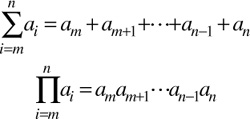
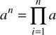

Networking Security Networking Security Networking Security Security Networking Security Networking Security Networking Charlie Kaufman Radia Perlman Mike Speciner Prentice Hall Network Security: Private Communication in a Public World, Second Edition
8.2. Notation
In order to avoid cumbersome long formulas with lots of ellipses ("..."s, not conic sections), we'll be using Σ notation for sums and Π notation for products:

As an example, we can define exponentiation (for non-negative integer exponents) in Π notation as

(A sum with no components is 0, a product with no components is 1.) Sometimes, instead of low and high limits, we'll specify the components of a sum or product with a condition, e.g., an = Π1 in a. When not otherwise specified, the index variable (i in the previous examples) takes on integer values satisfying the condition or limits. Within this chapter, if a low limit is not specified, it is assumed to be 0. Sometimes we'll leave out the index variable altogether when it's clear what it is. in a. When not otherwise specified, the index variable (i in the previous examples) takes on integer values satisfying the condition or limits. Within this chapter, if a low limit is not specified, it is assumed to be 0. Sometimes we'll leave out the index variable altogether when it's clear what it is.
We'll also use a bit of set notation. A set is a collection of elements. We write s ϵ S to indicate that s is an element of the set S. If we know all the elements of a set, we can write it by listing its elements separated by commas and enclosed in curly braces, e.g. {0,1,2} is a notation for the set comprising the first three non-negative integers. Listing an element more than once is the same as listing it once. If we know some property of the elements of a set, we can write it in terms of that property: {x | property(x)} is the set of elements x for which property(x) is true. More generally, {expression | condition} is the set of elements which can be written as expression subject to condition, e.g. {x2+y2 | xϵZ and yϵZ} is the set of numbers that can be expressed as the sum of two squares of integers. The difference of two sets A and B, written A-B, is the set of elements in A that are not in B.
 |